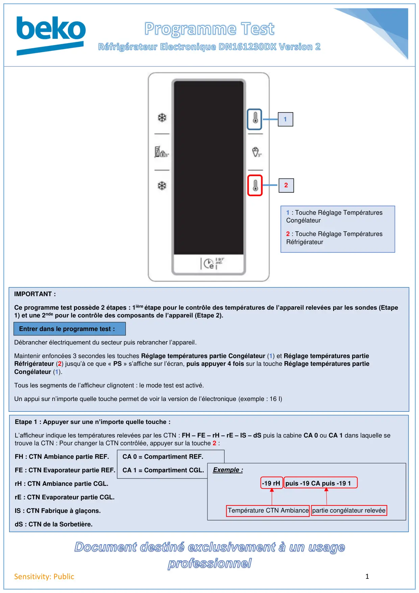
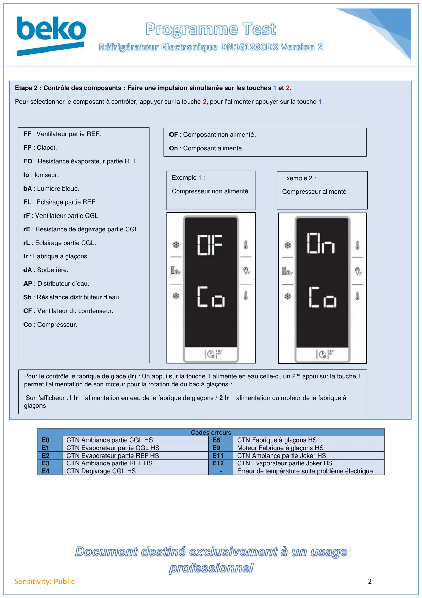

Prog Test REF DN161230DX Electronique 2

1Sensitivity: Public121 : Touche Réglage TempératuresCongélateur2 : Touche Réglage TempératuresRéfrigérateurIMPORTANT :Ce programme test possède 2 étapes : 1ière étape pour le contrôle des températures de l’appareil relevées par les sondes (Etape1) et une 2nde pour le contrôle des composants de l’appareil (Etape 2).Débrancher électriquement du secteur puis rebrancher l’appareil.Maintenir enfoncées 3 secondes les touches Réglage températures partie Congélateur (1) et Réglage températures partieRéfrigérateur (2) jusqu’à ce que « PS » s’affiche sur l’écran, puis appuyer 4 fois sur la touche Réglage températures partieCongélateur (1).Tous les segments de l’afficheur clignotent : le mode test est activé.Un appui sur n’importe quelle touche permet de voir la version de l’électronique (exemple : 16 I)Etape 1 : Appuyer sur une n’importe quelle touche :L’afficheur indique les températures relevées par les CTN : FH – FE – rH – rE – IS – dS puis la cabine CA 0 ou CA 1 dans laquelle setrouve la CTN : Pour changer la CTN contrôlée, appuyer sur la touche 2 :FH : CTN Ambiance partie REF.FE : CTN Evaporateur partie REF.rH : CTN Ambiance partie CGL.rE : CTN Evaporateur partie CGL.IS : CTN Fabrique à glaçons.dS : CTN de la Sorbetière.CA 0 = Compartiment REF.CA 1 = Compartiment CGL.Exemple :-19 rH puis -19 CA puis -19 1Température CTN Ambiance partie congélateur relevéeEntrer dans le programme test :
1 / 2
2Sensitivity: PublicEtape 2 : Contrôle des composants : Faire une impulsion simultanée sur les touches 1 et 2.Pour sélectionner le composant à contrôler, appuyer sur la touche 2, pour l’alimenter appuyer sur la touche 1.Codes erreursE0CTN Ambiance partie CGL HSE8CTN Fabrique à glaçons HSE1CTN Evaporateur partie CGL HSE9Moteur Fabrique à glaçons HSE2CTN Evaporateur partie REF HSE11CTN Ambiance partie Joker HSE3CTN Ambiance partie REF HSE12CTN Evaporateur partie Joker HSE4CTN Dégivrage CGL HS-Erreur de température suite problème électriqueFF : Ventilateur partie REF.FP : Clapet.FO : Résistance évaporateur partie REF.Io : Ioniseur.bA : Lumière bleue.FL : Eclairage partie REF.rF : Ventilateur partie CGL.rE : Résistance de dégivrage partie CGL.rL : Eclairage partie CGL.Ir : Fabrique à glaçons.dA : Sorbetière.AP : Distributeur d’eau.Sb : Résistance distributeur d’eau.CF : Ventilateur du condenseur.Co : Compresseur.OF : Composant non alimenté.On : Composant alimenté.Exemple 1 :Compresseur non alimentéExemple 2 :Compresseur alimentéPour le contrôle le fabrique de glace (Ir) : Un appui sur la touche 1 alimente en eau celle-ci, un 2nd appui sur la touche 1permet l’alimentation de son moteur pour la rotation de du bac à glaçons :Sur l’afficheur : I Ir = alimentation en eau de la fabrique de glaçons / 2 Ir = alimentation du moteur de la fabrique àglaçons
2 / 2